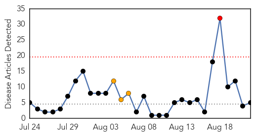
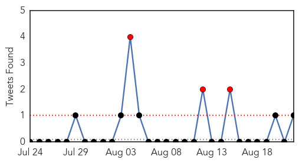

West Nile Virus
30-Day Web Trend
0 alerts, 0 warnings

30-Day Twitter Trend
0 alerts, 0 warnings

Article Locations

Article Confidences

Top Articles:
- 0.996
- Montgomery County to start spraying for West Nile
- 0.992
- West Nile Virus rare in humans, but still demands vigilance
- 0.979
- State’s First Human West Nile Case Confirmed in Middlesex County
- 0.970
- Farmers Branch resident confirmed with neuro-invasive form of West Nile
- 0.963
- 1st human case of West Nile in Mass. this year
- 0.884
- Louisiana health officials confirm 10 new West Nile virus cases
- 0.870
- Delta mosquito efforts not focusing on West Nile
- 0.847
- 5 Human Cases Of West Nile Virus Reported In Idaho
- 0.846
- 2 viruses found in Cabell County mosquito pools
Top Tweets:
-
No tweets found for Aug 22, 2014
Cholera
30-Day Web Trend
1 alerts, 3 warnings

30-Day Twitter Trend
5 alerts, 0 warnings

Article Locations

Article Confidences

Top Articles:
- 0.999
- At Least 67 Killed, 5,000 Infected Since June, Health Officials Say
- 0.982
- 5 klled by Cholerae in Volta Region
- 0.872
- Cholera outbreak in Ghana kills at least 67 since June -health authorities
- 0.852
- La General Hospital appeals to benefactors over cholera
- 0.772
- Education will save Accra from cholera – Harold Esseku
Top Tweets:
- 0.894
- Failure to control Ebola is NOT "a historic failure."It just happened: >700,000 cases from cureable cholera Haiti http://t.co/R8FSoQaRfB